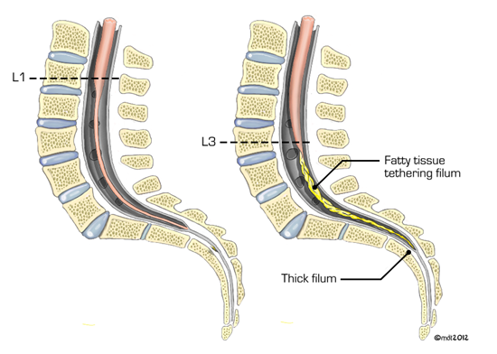
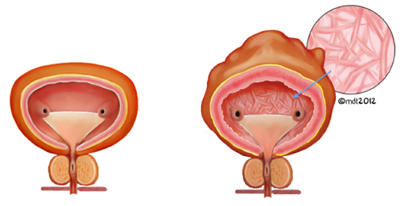
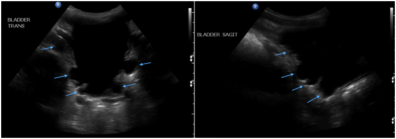
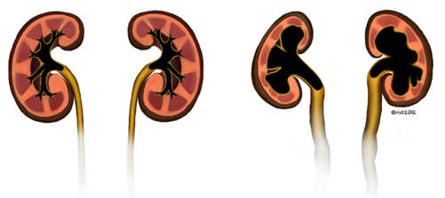
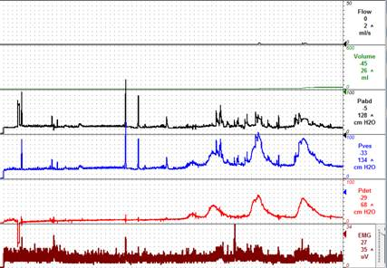
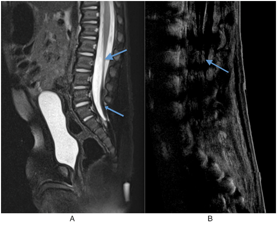
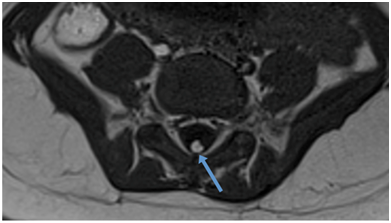
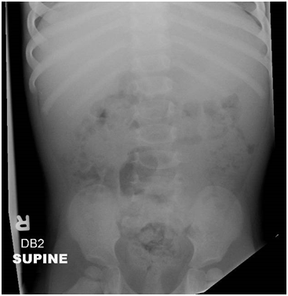

INTRODUCTION:
Tethered cord syndrome (TCS) is a condition that is characterized by a constellation of neurologic, urologic, and orthopedic findings, which occur as the result of inappropriate tissue adherence of the spinal cord to surrounding tissues from congenital or acquired causes. In a normal individual, as the spine flexes or extends, the spinal cord freely moves within the spinal column. If the spinal cord is attached to the column, then as the spine flexes or extends, the cord is placed on tension, which results in an abnormal stretching of the spinal cord resulting in a progressive symptom complex.
This phenomenon was first described nearly a century ago by Fuchs in 1910 to explain the pathophysiology of urinary incontinence upon flexion in a group of patients with myelomeningocele (Fuchs 1910). In 1953, Dr. George Garceau described a series of patients with progressive spastic paralysis, with each of the patients found to have a thickened filum terminale leading to the characterization of “cord traction symptoms” (Garceau 1953). The first use of the term tethered cord syndrome was from Hoffman et al in 1976, when he used this term to describe a series of 31 patients with elongated cords whose neurologic symptoms improved following the sectioning of the thick filum terminale (Hoffman 1976).The incidence of this disorder is approximately 0.05 to 0.25 per 1000 births (Solmaz 2011). Any condition that fixes the spinal cord can cause TCS, however, it is most commonly the result of spinal dysraphism and most recognizable when the conus medullaris ends below the mid-body spinal level of L2. The term TCS encompasses the various progressive symptoms that occur as a result of spinal cord tension.
EMBRYOLOGY:
It is imperative to have a basic understanding of spinal cord development and embryology to understand the congenital causes and symptoms produced from tethered cord syndrome. The human nervous system derives from a specialized portion of ectoderm in the developing fetus known as the neural plate. The process of spinal cord development is first initiated by primary neurulation, which occurs between day 18 and 28 of development. During primary neurulation, the neural plate begins to involute, leading to a neural groove with accompanying lateral folds. As these folds are created, they begin to fuse over the midline of the dorsal groove. Closure of the neural tube begins cephalad, at the area that corresponds to the future cervical spinal cord and continues in the caudal direction (Nolte 2002). As the neural tube closes, the proximal and distal neuropore remain patent with closure occurring on day 25 for the rostral end and day 27 for the caudal end.
The sacral spinal cord develops as a result of a process known as secondary neurulation during gestational days 28-41, in which undifferentiated cells from the primitive streak, distal to the neural tube begin to form a caudal cell mass. The caudal cell mass forms vacuoles, which fuse to form the distal neural tube. This serves as the basis for the formation of the conus medullaris, cauda equina, and filum terminale. As the end of secondary neurulation occurs, the ventricularis terminalis, a cystic structure at the caudal portion of the neural tube, develops and marks the site of the future conus medullaris (Lew 2007).
The ventricularis terminalis is initially at the coccygeal level, however as the gestational period of growth continues, the caudal spinal cord undergoes a process known as retrogressive differentiation, resulting in the formation of the filum terminale, cauda equina, and the ascent of the conus medullaris into the vertebral column (Lew 2007). The portion of neural tube that is distal to the ventricularis terminalis forms the fibrous portion of the filum which attaches to the sacrococcygeal region of the vertebrae, and as the column outgrows the cord, this fibrous band elongates (Barson 1970). The most rapid ascent of the conus medullaris occurs during weeks 11-17 and the conus medullaris reaches the adult level of the L1/L2 intervertebral disc space at 2-3 months post-term (Barson 1970).
An understanding of neural tube development is the key in understanding, diagnosing, and treating tethered cord syndrome. The normal cord ends above the mid-body level of L2 with certain variability in the population. Patients more than 3 months of age and definitely more than 6 months of age, with a conus found below the mid-body of L2 should be evaluated for tethered cord syndrome

Figure 1: Depiction of the conus medullaris tethered below the mid body of L2 from a lipoma (image on the right; normal spine and cord in image on the left)
PATHOPHYSIOLOGY:
The basis for the constellation of symptoms observed with tethered cord syndrome is due to the attachment of the cord to surrounding tissue leading to tension and stretch on the cord as the individual flexes or extends. The symptoms that result from this stretch can be explained by what occurs at the biochemical level.
Early studies by Yamada et al used reflective spectrophotometry to observe alterations in the metabolic activity of mitochondria in a series of 7 pediatric patients with TCS prior to surgical release of the tethered cord (Yamada 1981). They observed the reduction of cytochrome aa3 in tethered cord subjects, which resulted in dysfunction of the terminal mitochondrial oxidase of the electron transport chain, resulting in a deficiency of adenosine triphosphate (ATP) production and subsequent neuronal cell death (Yamada 1981). The reduction of cytochrome aa3 was intensified with increasing cord tension (Yamada 1981). Further work was performed by Schneider et al who evaluated microcirculation of the distal spinal cord using laser Doppler flowmetry (LDF) in 10 children with TCS. They found that following surgical cord release, there was a significant improvement in the amount of spinal cord blood flow to the distal cord (Schneider 1993). This data supports the theory that the tension placed on the spinal cord in individuals with TCS results in a state of hypoxia leading to metabolic derangement resulting in neurologic signal dysfunction.
The clinical symptoms observed in individuals with TCS indicate that the lesions are located in the lumbosacral cord (Yamada 2004). It has been shown through cord traction analysis that the area of the spinal cord most vulnerable to elongation is the conus medullaris and that no elongation occurs superior to the most inferior pair of dentate ligaments, which act as a buffer for spinal cord stretch (Tani 1987, Yamada 2004, Lew 2007, Sarwar 1983).
CAUSES:
Tethered cord syndrome can be caused by any disease state that results in spinal cord immobilization. Etiologies range from congenital diseases to acquired conditions; congenital causes are the most commonly encountered and frequently present in an occult fashion. It continues to be of utmost importance for each clinician to perform a thorough physical exam for each patient to determine if signs of spinal dysraphism exist.
Spinal dysraphisms are the most commonly encountered congenital causes of TCS and can exist as open or closed forms. Open spinal dysraphisms are caused by failure of neurulation and closure of the posterior tissue layers overlying the cord (Lew 2007). The dura and posterior vertebral arch fail to fuse, which result in the failure of fat and skin to form in the midline (Lew 2007). This results in expulsion of neurologic contents that range from spinal cord to cerebrospinal fluid depending on the timing of failure during development. Spinal meningocele occur when there is a late defect in cord development. In this condition, the vertebral bodies develop, however there is an open defect of the dura mater and overlying tissue from which the cerebrospinal fluid and arachnoid membranes herniate (Lew 2007). Myelomeningocele is the result of failure of neuropore fusion leading to the herniation of the meninges and spinal cord outside the spinal canal. In this setting, the spinal cord is observed at the skin surface without dermal or meningeal coverings.
Closed spinal dysraphisms are characterized by neural arch defects that are covered with intact skin; thickened filum terminale is included in this category, which was the first condition associated with tethered cord syndrome as described by Garceau in 1953. The filum tissue has a diameter of approximately 0.5 mm, but as it is infiltrated by fatty or fibrous tissue, the diameter of the filum terminale can exceed 2.0 mm leading to tethered cord syndrome (Bao 2007). A dermal sinus tract is another occult condition associated with tethered cord syndrome. It is caused by the incomplete dysjunction of the cutaneous ectoderm and neural ectoderm during the 4th week of fetal development (Venkataramana 2011). It results in an epithelial-lined tract that extends from the skin to the dura mater and can attach to the filum of the spinal cord (Venkataramana 2011). Lipoma, lipomeningocele and lipomyelomeningocele are all conditions which may result in tethered cord syndrome (Blount 2001). Although their name implies a lesion of adipocytes, histologic analysis has shown that these lesions often contain more than one cell line such as fibrous, muscular, or neural tissue (Blount 2001, Lellouch-Tubiana 1999, Muraszko 2000). This pluripotent tissue extends from the subcutaneous fat through the lumbosacral fascia to involve the spinal cord resulting in immobilization of the conus medullaris (Lew 2007).
In addition to congenital causes of tethered cord syndrome, there are also acquired causes. Re-tethering of the cord can occur following surgery to the lower cord for tethered cord release. The cause of this is often attributed to the development of scar tissue at the surgical site, which acts as an anchor to the spinal cord. There have been reports of foreign body reaction as the cause of re-tethering, which occurred from material used during surgery such as suture and dural graft material (Martinez-Lage 2010). In addition to the development of tethered cord syndrome following tethered cord release, it may also develop following myelomeningocele repair and, in fact, does in 10-30% of children (Mehta 2010, Balasubramaniam 1990, Shurtleff 1997). Secondary tethered cord syndrome appears to have two peaks of incidence. One study found a mean age for the development of secondary TCS was 7.8 years. In the same series of 202 patients followed after a myelomeningocele repair, 22 required TCS detethering at a mean age of 7.5 years. (Talamonti 2007). Another study found that secondary tethered cord syndrome occurs a mean of 8 years and 10 months after primary closure in a series of 8 patients. The mean age at operation for secondary tethered cord syndrome was roughly 5 years if the primary cause was lipomeningocele and 11 years 1 month if due to meningomyelocele (Ohe 2000). While the mean age of development of TCS is during childhood, the fact that adults also require detethering suggests a bimodal distribution (Talamonti 2007).
Other non-congenital causes of TCS include infections such as arachnoiditis that result in scar tissue which in turn tethers the spinal cord to the spine. Spinal cord injuries secondary to trauma can also cause tethered cord syndrome (Ragnarsson 1986, Henry 1997, Falci 1999).
Occult tethered cord (OTC) is a controversial topic which requires brief mention. First described by Khoury et al in 1990, children were noted to have the symptoms of tethered cord syndrome, primarily in the form of refractory urinary incontinence (Steinbok 2007); however, the conus was in the normal location consistent with spina bifida occulta. Diagnosis was thus based solely on symptoms as imaging reveals a normal lying conus.
DIAGNOSIS:
The clinical manifestations of tethered cord syndrome are broad and are often classified based on age. Symptoms often incorporate many body systems including urologic, neurologic, musculoskeletal and cutaneous. The physical exam plays a large role in the evaluation of children with possible tethered cord syndrome. Special attention should be paid to the dorsal spine and lower extremities to evaluate for the common cutaneous and orthopedic abnormalities.
Routine use of fetal sonography, and more recently fetal MRI, where indicated, make it possible to detect a spinal cord abnormality prenatally. The fetal spinal cord can be easily visualized by sonography and the conus medullaris can be identified (Sohaey 2009). Sohaey et al have described the use of fetal sonography and fetal MRI to characterize both open and closed neural tube defects. Prenatal diagnosis of spinal dysraphism is important for appropriate planning and referral but now also offers the possibility of prenatal intervention. Adzick et al demonstrated that prenatal versus postnatal myelomeningocele repair decreased the risk of death and need for shunting at 1 year (2011). Secondary outcomes, including hindbrain herniation at 12 months and motor skills and ambulation at 30 months, also improved (Adzick 2011). The long term effects of fetal myelomeningocele repair have been studied by Clayton et al. They noted on review of 28 children who underwent fetal myelomeningocele closure versus age and sex matched controls of those who underwent the standard postnatal repair, that there were no significant differences in urologic and bowel outcomes, specifically bladder and bowel management, urinary tract surgery, bowel surgery, or urodynamics (2011). Based on these findings, it is therefore critical to follow the bladder and bowel function of myelomeningocele patients regardless of prenatal or postnatal surgery (Clayton 2011).
In the infant and neonate, the cutaneous manifestations may be the only indicator of tethered cord syndrome (Lew 2007, Hertzler 2010). Cutaneous stigmata are present in 46-70% of children with tethered cord syndrome (Bui 2007, Warder 1994). Signs of dysfunction may include hypertrichosis, lipomas, hemangiomas, nevi and dermal sinuses (Lew 2007, Hertzler 2010, Bui 2007). At this age, orthopedic abnormalities such as leg-length discrepancy, scoliosis, foot asymmetry, foot deformity such as pes cavus and claw toes may begin to be noticeable (Bui 2007). Orthopedic deformities are noted in more than 90% of patients with TCS (Bui 2007, Warder 1994, Warder 2001).
In the neonatal and infant years, urological abnormalities may not be readily apparent (Bui 2007) in the absence of cutaneous manifestations or orthopedic deformities. In this age group, indirect signs of neurogenic bladder such as urinary tract infections may prompt evaluation. Urodynamics may detect subtle neurogenic bladder dysfunction at this age when there is clinical suspicion of TCS (Bui 2007). Similarly, neurogenic bowel dysfunction may only be indicated by constipation at this age. Again, in the face of obvious spinal cord abnormality, the management algorithm is very clear. However, where subtle abnormalities in bladder or bowel function are detected, the physician should have a low threshold to initiate the appropriate testing to assess for underlying neurologic disease.
As the child begins to grow and then starts walking, motor and sensory sequelae may become the primary symptoms. Neurologic symptoms exist in up to 64% of children with TCS (Bui 2007, Warder 1994). Motor symptoms are the most common followed by bowel and bladder dysfunction, pain, and finally, sensory complaints (Warder 2001). Motor dysfunction is characterized by asymmetrical weakness and gait difficulty or delayed ambulation (Bui 2007). Pain is often non-dermatomal and is localized to the lower back, perineum, and/or legs (Lew 2007). Sensory deficits are commonly localized to the feet and perineum and involve multiple myotomes (Bui 2007).
Once the child is of toilet-training age, the urologic dysfunction associated with TCS may become more apparent as the child can help describe symptoms. A thorough history and physical exam should be performed with careful attention to histories that describe the loss of previous milestones in continence (Agarwalla 2007) or new onset problems with bladder or bowel function. Urologic abnormalities are present in approximately 18% of TCS children (Bui 2007). Neurogenic bladder is a hallmark abnormality of TCS with symptoms of incontinence, urgency, increased/abnormal frequency and recurrent urinary tract infections (Bui 2007, Palmer 1998). Neurogenic bladder can result in a thickened and trabeculated appearance to the bladder wall, specifically the detrusor muscle, which can be detected on bladder ultrasound (Figures 2, 3).

Figure 2: Comparison of a normal bladder (left) and a trabeculated and thickened bladder (right, with arrow indicating the intravesical appearance of trabeculations)

Figure 3: Transverse (left) and sagittal (right) ultrasound images of the bladder revealing trabeculations (arrows)
If not adequately managed, this can ultimately result in fibrosis and loss of bladder compliance, which can lead to high bladder pressures. In the worst cases, these high pressures can be transmitted to the kidneys, result in vesicoureteral reflux, nephropathy, and renal failure requiring renal transplant (Figure 4).

Figure 4: Comparison of normal kidneys (left) with kidneys affected by high intravesical bladder pressures (right) with noted hydronephrosis with dilated ureters and parenchymal thinning.
Manifestations of neurogenic bowel dysfunction may also become apparent. These include altered sensation of stool in the anal vault and diminished external anal sphincter contractility. This can present on a continuum ranging from constipation and encopresis to diarrhea (Palmer 1997). The location of the injury determines which bowel symptoms arise. Lower motor neuron (LMN) injuries, resulting from a lesion affecting parasympathetic cell bodies (e.g. conus medullaris, cauda equina, or pelvic nerves) diminish peristalsis. This leads to slow stool propulsion, but also fecal incontinence due to denervation of the external anal sphincter and levator ani muscles. Conversely, an upper motor neuron (UMN) lesion above the conus medullaris will lead to bowels that are hyper-reflexic. This manifests as dysregulated colonic motility with increased anal tone, leading to constipation and fecal impaction (Paris 2011).
URODYNAMIC PROFILE:
To help delineate any urologic dysfunction in children with TCS, they should undergo formal urodynamic testing. Detecting subclinical changes allows for untethering in advance of more prominent neurologic symptoms (Vernet 1996). Palmer and colleagues found that 75% of TCS children demonstrate preoperative urodynamic findings that change following detethering (Palmer 1998). Vernet and colleagues had similar success with a sensitivity of 83% for detecting urological disturbances in patients with secondary TCS following myelomeningocele repair (Vernet 1996). Urodynamic studies are performed in the standard fashion for these children with a focus on voiding cystourethrography, intra-abdominal and intravesical pressure, sphincter electromyography and urethral pressure profilometry. The most common findings among children with TCS include detrusor overactivity, decreased bladder compliance, detrusor sphincter dyssynergia, and decreased sensation (Hertzler 2010) (Figure 5). Other sources have cited detrusor hyperreflexia, decreased compliance, atonic bladder, and detrusor areflexia as the most common findings in TCS patients (Fone 1997). Patients with primary tethered cord less than 3 years of age were found to have hypotonia as the most common urodynamic finding (46.7%), followed by detrusor sphincter dyssynergia, high voiding pressures, noncompliant bladder, and hyperreflexia (Macejko 2007). The non-uniform use of terminology creates an issue comparing data between studies (Fone 1997). Urodynamic profiles in infants and young children can at times be difficult to interpret; infants, especially males, can have high voiding pressures accompanied with physiologic discoordination of the detrusor sphincter complex which matures with age (Bachelard 1999).
The majority of patients with TCS will have a change in their urodynamic profile; however, the change is not typically severe enough to produce clinical signs and symptoms (Palmer 1998). The concern over progressing bladder dysfunction in this population is in the group of patients with high intravesical pressures (Detrusor Leak Point Pressure > 40 cm H2O) as this has been shown to promote vesicoureteral reflux and subsequent upper tract deterioration (McGuire 1981) (Figure 5). The purpose of urodynamic testing is two-fold in that it provides a baseline measurement for which any deterioration in function can be measured and, conversely, for which any improvement following tethered cord release can be measured (Palmer 1998).

Figure 5: Urodynamic profile – detrusor overactivity and detrusor sphincter dyssynergia
RADIOGRAPHIC STUDIES:
The use of imaging modalities such as, MRI, ultrasound, and CT has been studied in patients with TCS to confirm the diagnosis when clinical suspicion is high. It will often times identify the level of the conus medullaris as well as where the tethering is located.
As discussed earlier, the use of fetal sonography and MRI may lead to a prenatal diagnosis of spinal cord dysraphism. On sonography, vertebral body segmentation anomalies are indicated by a “jumbled-spine” appearance. Additionally, closed versus open neural tube defects may be detected and characterized. A myelocystocele can be identified as a lumbosacral mass containing cerebrospinal fluid, neural tissue, and adipose tissue. Lipomyelomeningocele, if present, may demonstrate a large subcutaneous lumbar fatty mass in the absence of remarkable back deformity. Other signs may be present that are difficult to visualize prenatally, such as a sacral dimple or deviated gluteal fold. Open neural tube defects are almost always seen prenatally on sonography, and associated Chiari 2 malformation and hydrocephalus add certainty to the diagnosis (Sohaey 2009). Early recognition of these findings will allow for a coordinated care effort at the time of the delivery.
Magnetic Resonance Imaging (MRI)
In the postnatal period, magnetic resonance imaging is the imaging modality of choice in the evaluation of tethered cord syndrome. MRI allows for identification of the cause and provides adequate anatomical detail to allow for surgical planning (Lew 2007). MRI is capable of identifying meningoceles, myelomeningoceles, split cord malformations, lipomatous and dermal tumors, thickened filum and sinus tracts (Lew 2007, Hertzler 2010). Sagittal T1- and T2-weighted images are best for localizing the level of the conus, whereas axial T1-weighted images are best for determining the diameter and if fat is present in the filum terminale (Bui 2007). Of note, patients that have undergone a laminectomy will always to appear to have a tethered cord on MRI, even in the absence of underlying pathology.

Figure 5: A) Sagittal T2 MRI with Fat Saturation. The conus medullaris is elongated and low-lying, and terminates at L3 (large arrow). A lipoma of filum terminale is also seen (small arrow). B) The conus medullaris is again seen low-lying and terminating at the L3 level (arrow).

Figure 6: Axial T1 MRI showing a lipoma of the filum terminale.
Ultrasound
Ultrasound to evaluate for tethered cord syndrome can be useful in infants. It allows for the evaluation of the cord without subjecting the child to radiation. It is most useful in children up to 6 months of age, but is most sensitive before 3 months of life, after which there is a loss of an acoustic window from the ossification of the spine (Singh 2012). In this age group, ultrasound is best able to detect decreased spinal cord motion with its dynamic viewing, the presence of fat and the level of the conus medullaris. Ultrasound is also used to monitor the upper and lower urinary tracts as part of routine follow up. This permits detection and monitoring of bladder wall thickness, presence of bladder trabeculation, hydronephrosis, renal parenchymal thickness, and stones. The 2009 European Association of Urology guidelines suggest ultrasound of the upper urinary tract and bladder every 6 months in patients with neurogenic lower urinary tract dysfunction (Stohrer 2009). Other recommendations have favored yearly renal sonography and urodynamic examination in all children with myelomeningocele (Fone 1997). As an adjunct to ultrasound, a DMSA scan can be considered for further evaluation of the upper urinary tract.
Computed Tomography (CT)
Computed tomography or CT myelography can be used if MRI is not available and was previously the standard for diagnosis (Agarwalla 2007). Although invasive and perhaps difficult to perform in young children, these modalities do permit adequate anatomical detail of the spine and position of the conus (Bui 2007). CT should be considered only as a secondary option if MR imaging is inadequate or unavailable, as CT exposes the patient to high radiation doses and children have a much greater risk of developing radiation-induced cancer (Darge 2013); this is especially important in these children as they will be subjected to multiple imaging studies over the course of their lifetimes.
Abdominal X-Ray
Plain-film x-ray images also have a role in the radiologic investigation of patients with tethered cord syndrome. Plain films can assess associated bone malformations such as vertebral anomalies or bone spurs (Caldarelli 2013). They are also particularly helpful in characterizing spinal curvature and observing it over time (Agarwalla 2007, Bui 2007). X-ray films may also be used to detect renal or bladder calculi (Strouse 2002). In patients with neurogenic bowel dysfunction, plain abdominal radiography is useful for evaluating the degree and distribution of feces in the colon and helps to evaluate the success of bowel management programs. It is also inexpensive and has significantly less radiation compared to other imaging techniques (Park 2013).

Figure 7: Abdominal x-ray in a 20-month-old female demonstrating a stool throughout the colon with “stool ball” in rectum
MANAGEMENT:
The natural history of tethered cord syndrome is poorly understood due to the paucity of prospective trials comparing conservative to surgical management. Children with evidence of a tethered cord fit into either the symptomatic or asymptomatic group. Children presenting with neurologic or urologic symptoms related to their tethered cord should undergo surgical treatment, however, the decision to operate on a child who has evidence of tethered cord, but remains asymptomatic is less clear. It has been shown that in children who have previously undergone surgical repair and developed re-tethering, the patients developed urologic and orthopedic symptoms in 89% that required surgical intervention (bladder augmentation, contracture release, spinal fusion) (Phuong 2002). The incidence of progression of tethered cord syndrome as reflected by further orthopedic or urologic procedures were 27.5, 40, and 60% at 1, 2, and 5 years respectively (Phuong 2002). In a review of 69 patients with meningoceles that were treated surgically in the first 24 hours of life and were followed for 5 years, 4% developed urologic signs as the initial manifestations of tethered cord syndrome (Zerche 1997). A study by Satar et al showed that following tethered cord release in older individuals, neurologic symptoms and urodynamic profiles largely remained unchanged or even worsened in a few, concluding that older children and adults with occult spinal dysraphism are more likely to present with irreversible urological and neurological findings than younger children. Therefore, it is imperative that a diagnosis be made and treatment be instituted as early as possible (Satar 1995). There are no credible reports of patients with motor deficits, scoliosis, orthopedic deformities, or urologic dysfunction spontaneously improving without surgical detethering and therefore, in patients developing symptoms related to a tethered cord, there exists little likelihood of symptomatic improvement without surgical detethering (Lew 2007).
Surgical detethering is based upon the etiology of the tethered cord with the main goal of relieving the tension on the spinal cord. In cases of a thickened filum, the recommended surgical approach is a simple sectioning of the filum terminale. Spinal lipomas and lipomyelomeningoceles are debulked and excised followed by a watertight dural closure. Dermal sinus tracts require full excision of the sinus tract. More complicated procedures are required for children with the various degrees of spina bifida, but the primary endpoint remains, which is detethering with adequate dural closure and minimal scarring.
The procedures for detethering the spinal cord do not come without risks. Those include cerebrospinal fluid leak, wound infections, neurological complications and re-tethering of the cord. Symptomatic re-tethering of the cord is a frequent complication of the detethering procedure and is more frequent after repair of more complex spinal dysraphisms when some adherent tissue is unable to be removed (Agarwalla 2007). The rates of re-tethering range from 5-50% and are often a clinical diagnosis based on new urologic, neurologic or orthopedic problems (Lew 2007). Many surgical advances have been utilized to minimize the rate of re-tethering such as changes in dural closures, hemostasis and intricate removal of the tethering tissue.
Occult tethered cord as mentioned previously, presents a diagnostic and management conundrum. In 1990, Khoury et al described children with refractory urinary incontinence who following sectioning of the filum terminale demonstrated the following results: 72% had improvement in incontinence; 59% improvement in urodynamic detrusor hyperreflexia; and improvement in bladder compliance in 66% of patients. Since then there have been few additional small studies discussing sectioning of the cord in cases of occult tethered cord syndrome. Management remains extremely controversial due to the potential for worsening of symptoms in the absence of radiological findings, however sectioning of the filum terminale has been supported by retrospective reviews of small series (Fabiano 2009; Steinbok 2007; Guerra 2006; Metcalfe 2006; Selden 2006; Wehby 2004; Selcuki 2000; Nazar 1995; Warder 1993). Given the scarcity of data on small patient populations in the absence of radiological findings, these authors do not recommend routine sectioning of the filum unless circumstances exceptional and even then parents must receive extensive counseling on potential outcomes.
In addition to management of spinal abnormalities leading to TCS, medical and surgical management may be necessary for the resulting neurogenic bowel and bladder dysfunction. Where the patients have normal bladder and bowel function, they can be followed closely to assess for deleterious changes. In patients with signs and symptoms of a neurogenic bladder, the first step in management is medical to address the inability of the bladder to empty effectively and minimize the risk of bladder fatigue and scarring by dampening the detrusor overactivity. Medical management of neurogenic bladder dysfunction incorporates the use of anticholinergics and intermittent catheterization (CIC), and reserves surgical treatment for bladder deterioration despite maximization of medical management (Snodgrass 2010). In the newborn or infant where bladder pressures are high and compliance poor despite maximal medical therapy, then surgical intervention may be required. A temporizing measure such as a vesicostomy can be done easily and with minimal risk. This will allow the bladder to drain constantly and relieve pressure and risk of injury to the upper tracts. Higher diversions may also occasionally need to be performed. In the older child, bladder augmentation may be required for management of the small contracted, “hostile” bladder with elevated detrusor pressures and reduced compliance. Augmentation cystoplasty incorporates the use of a bowel segment, usually ileum, to effectively increase the capacity of the bladder. It also results in decreased detrusor pressures and minimizes risk of deterioration of the upper tracts. This in conjunction with a catheterization regimen has also demonstrated an 80% success rate in achieving continence at a mean follow-up of 20 months (Snodgrass 2010). In many instances a catheterizeable channel is developed at the same time as bladder augmentation to facilitate emptying. Finally, a more recent surgical intervention includes the injection of botulinum toxin into the bladder submucosa or detrusor depending on the technique used, with the goal to avoid more aggressive surgery while at the same time eliminating detrusor overactivity and decreasing high pressures in the bladder. In essence the goal is to decrease the hostility of the bladder. In this situation, and where the bladder responds appropriately, the patient must be maintained on a CIC regimen; otherwise the bladder will not empty unless the patient leaks at low abdominal pressures. Most studies evaluating the duration of the effects of botulinum toxin have found that success is short lived, with symptomatic improvement lasting only 3-9 months before repeat injection is required. (Figueroa 2013; Game 2009; Altaweel 2006; Schulte-Baukloh 2005).
Sphincteric insufficiency, which may occasionally exist in these situations, may affect the quality of life for the older child. However, it does offer a protective advantage to the bladder and upper tracts, as leakage at low abdominal leak point pressures minimizes the risk of developing high detrusor leak point pressures. In the older child, where continence is desired, however, a surgical procedure to increase bladder outlet resistance including injection of a bulking agent, reconstruction with a sling, artificial urinary sphincter, or bladder neck repair (wrap or revision) is required (Snodgrass 2010). Bladder outlet closure should be reserved until all else has failed and absolutely needs to be performed in conjunction with the creation of a continent or incontinent channel (e.g., appendico-vesicostomy (Mitrofanoff), Monti, or ileal chimney) to allow for bladder emptying. Bladder neck closure effectively eliminates ready access to the bladder and any complications in the channel created to drain the bladder are extremely difficult to manage and may increase the risk of bladder perforation especially if this is done at the same time as augmentation cystoplasty. It is this author’s recommendation to avoid bladder outlet closure at all costs.
Neurogenic bowel dysfunction can be managed conservatively with diet modification, pharmacologic treatment, biofeedback, trans-anal irrigation/enemas, massage, and electrical stimulation therapies. Pharmacologic intervention depends on whether the patient is experiencing constipation or incontinence. Constipation can be treated with bulking agents, stool softeners, and osmotic and pro-kinetic agents. Irrigation can be used for constipation refractory to conventional treatments. Where conservative measures fail, surgical alternatives exist such as antegrade continence enemas (Malone anterograde continence enema (MACE) or cecostomy tube), sacral root stimulator implantations, graciloplasties, and artificial bowel sphincters (Paris 2011). A MACE procedure allows for anterograde irrigation of the entire bowel and has a high success rate of approximately 80% (Paris 2011). A MACE procedure is often performed in conjunction with bladder augmentation and creation of a urinary channel. Fecal incontinence can be treated with spinal cord, sacral, or external simulation (Paris 2011). Palmer et al found that 68% of patients noted significant improvement with a minimally invasive transrectal electrostimulation technique. More recently bulking agents have been used with greater success to assist with fecal continence where spincteric incontinence exists (Leung 2011). A randomized trial by Graf et al. showed a 50% reduction in incontinent episodes in 52% of the treatment group compared to 31% in the sham group, follow up was 6 months (Graf 2011). This study and others were the topic of a Cochrane review which highlighted the paucity of well-designed randomized trials regarding fecal continence (Maeda 2013); there remains a lack of consensus on the best material to use as a bulking agent.
RESULTS FOLLOWING DETETHERING:
The results of surgical detethering for symptomatic tethered cord syndrome have been shown to be favorable. In a review of 114 children followed after tethered cord release, the most responsive symptoms include pain, improved gait, improved lower extremity muscle strength and stable lower extremity muscle contractures (Bowman 2009). These same results have been echoed by several other studies examining children following tethered cord release.
Urologic response to detethering procedures is quite variable and is dependent on age and pre-operative function. In a study by Hsieh et al that examined urodynamic profiles in children before and after a detethering procedure showed that of the subset of children with an abnormal preoperative urodynamic profile, 50% showed improvement or normalization of the profile and of those with a normal preoperative urodynamic profile, all patients had a normal postoperative urodynamic profile (Hsieh 2006). In another study examining urodynamic profiles pre and postoperatively, 35% of children had improvement in their bladder dysfunction, while 5% deteriorated in their bladder dysfunction (Abrahamsson 2007). While these results seem promising, not all studies have shown dramatic improvements in urinary function following detethering procedures. A study by van der Meulen et al compared the outcomes of 4 groups of patients; 1.) Detethering performed in asymptomatic children; 2.) Detethering performed in children with progressively worsening symptoms; 3.) Detethering following a period of conservative management; and 4.) Conservative management. While the first group had stable urological function during the period of follow up, which further supports early detethering, the other groups showed mixed improvement, stability and deterioration of function (van der Meulen 2002). A comparison of detethering in occult spinal dysraphism versus secondary tethering showed that detethering improved urodynamic findings in 62.5% in the occult spinal dysraphism groups, whereas the secondary tethering group improved in 30% following detethering, but worsened in 48% (Fone 1997). Due to the risk of re-tethering of the cord, a study evaluating urologic outcomes following multiple detethering procedures showed benefit regardless of the number of previous detethering procedures (Al-Holou 2009). While improvement in urologic function is variable, it is consistent that the earlier the tethered cord is released the better the long term urologic function of the patient.
CONCLUSIONS:
Tethered cord syndrome is a disorder of spinal cord movement, which results in a myriad of symptoms affecting many organ systems. While there are standards in place for the evaluation and management of these patients, the care of the patients should be managed using a multidisciplinary team approach which includes specialists from Urology, Neurosurgery, and Orthopedic surgery. Early management of the tethered cord offers the best opportunity to preserve/improve long term urologic and bowel function.
ACKNOWLEDGEMENTS:
Much of the information on the neurosurgical aspects of tethered cord contained in this review comes from Neurosurgical authored reviews instead of primary articles in an attempt to simplify the material regarding neural development.
REFERENCES:
1. Abrahamsson K, Olsson I, Sillen U. Urodynamic findings in children with myelomeningocele after untethering of the spinal cord. J Urol. 2007;177(1):331-4.
2. Adzick NS, Thom EA, Spong CY, et al. A randomized trial of prenatal versus postnatal repair of myelomeningocele. N Engl J Med. 2011;364(11):993-1004.
3. Agarwalla PK, Dunn IF, Scott RM, Smith ER. Tethered cord syndrome. Neurosurg Clin N Am. 2007;18(3):531-547.
4. Al-Holou WN, Muraszko KM, Garton HJ, Buchman SR, Maher CO. The outcome of tethered cord release in secondary and multiple repeat tethered cord syndrome. J Neurosurg Pediatr. 2009;4(1):28-36.
5. Altaweel W, Jednack R, Bilodeau C, Corcos J. Repeated intradetrusor botulinum toxin type A in children with neurogenic bladder due to myelomeningocele. J Urol. 2006;175(3 Pt 1):1102-1105.
6. Bachelard, M, Sillen, U, Hansson, S, et al. Urodynamic pattern in asymptomatic infants: siblings of children with vesicoureteral reflux. J Urol. 1999; 162(5):1733-1777.
7. Balasubramaniam C, Laurent JP, McCluggage C, Oshman D, Cheek WR. Tethered-cord syndrome after repair of meningomyelocele. Childs Nerv Syst. 1990;6(4):208-211.
8. Bao N, Chen ZH, Gu S, Chen QM, Jin HM, Shi CR. Tight filum terminale syndrome in children: Analysis based on positioning of the conus and absence or presence of lumbosacral lipoma. Childs Nerv Syst. 2007;23(10):1129-1134.
9. Barson AJ. The vertebral level of termination of the spinal cord during normal and abnormal development. J Anat. 1970;106(Pt 3):489-497.
10. Blount JP, Elton S. Spinal lipomas. Neurosurg Focus. 2001;10(1):e3.
11. Bowman RM, Mohan A, Ito J, Seibly JM, McLone DG. Tethered cord release: A long-term study in 114 patients. J Neurosurg Pediatr. 2009;3(3):181-187.
12. Bui CJ, Tubbs RS, Oakes WJ. Tethered cord syndrome in children: A review. Neurosurg Focus. 2007;23(2):E2.
13. Caldarelli M, Boscarelli A, Massimi L. Recurrent tethered cord: radiological investigation and management. Childs Nerv Syst. 2013;29:1601-1609.
14. Clayton DB, Tanaka ST, Trusler L, et al. Long-term urological impact of fetal myelomeningocele closure. J Urol. 2011;186(4 Suppl):1581-1585.
15. Darge K, Higgins M, Hwang TJ, Delgado J, Shukla A, Bellah R. Magnetic Resonance and Computed Tomography in Pediatri Urology. Radiol Clin North Am. 2013;51(4):583-598.
16. Fabiano AJ, Khan MF, Rozzelle CJ, Li V. Preoperative predictors for improvement after surgical untethering in occult tight filum terminale syndrome. Pediatr Neurosurg. 2009;45(4):256-261.
17. Falci SP, Lammertse DP, Best L, et al. Surgical treatment of posttraumatic cystic and tethered spinal cords. J Spinal Cord Med. 1999;22(3):173-181.
18. Figueroa V, Romao R, Pippi Salle JL, et al. Single-center experience with botulinum toxin endoscopic detrusor injection for the treatment of congenital neuropathic bladder in children: Effect of dose adjustment, multiple injections, and avoidance of reconstructive procedures. J Pediatr Urol. 2013.
19. Fone PD, Vapnek JM, Litwiller SE, et al. Urodynamic findings in the tethered spinal cord syndrome: Does surgical release improve bladder function? J Urol. 1997;157(2):604-609.
20. Fuchs A. Ueber beziehungen der enuresis nocturna zu rudementarformen der spina bifida occulta (myelodysplasie). Wien Med Wochenschr. 1910(80):1569-1573.
21. Garceau, GJ. The filum terminale syndrome (the cord-traction syndrome). J Bone Joint Surg Am. 1953;35-A(3):711-716.
22. Game X, Mouracade P, Chartier-Kastler E, et al. Botulinum toxin-A (botox) intradetrusor injections in children with neurogenic detrusor overactivity/neurogenic overactive bladder: A systematic literature review. J Pediatr Urol. 2009;5(3):156-164.
23. Graff, W, Mellgren, A, Matzel KE et al. Efficacy of dextranomer in stabilised hyaluronic acid for treatment of faecal incontinence: a randomised, sham-controlled trial. Lancet. 2011: 377(9770):997-1003.
24. Guerra LA, Pike J, Milks J, Barrowman N, Leonard M. Outcome in patients who underwent tethered cord release for occult spinal dysraphism. J Urol. 2006;176(4 Pt 2):1729-1732.
25. Henry A, Tunkel R, Arbit E, Ku A, Lachmann E. Tethered thoracic cord resulting from spinal cord herniation. Arch Phys Med Rehabil. 1997;78(5):530-533.
26. Hertzler DA,2nd, DePowell JJ, Stevenson CB, Mangano FT. Tethered cord syndrome: A review of the literature from embryology to adult presentation. Neurosurg Focus. 2010;29(1):E1.
27. Hoffman HJ, Hendrick EB, Humphreys RP. The tethered spinal cord: Its protean manifestations, diagnosis and surgical correction. Childs Brain. 1976;2(3):145-155.
28. Hsieh MH, Perry V, Gupta N, Pearson C, Nguyen HT. The effects of detethering on the urodynamics profile in children with a tethered cord. J Neurosurg. 2006;105(5 Suppl):391-395.91.
29. Khoury AE, Hendrick EB, McLorie GA, Kulkarni A, Churchill BM. Occult spinal dysraphism: Clinical and urodynamic outcome after division of the filum terminale. J Urol. 1990;144(2 Pt 2):426-8; discussion 428-9, 443-4.
30. Lellouch-Tubiana A, Zerah M, Catala M, Brousse N, Kahn AP. Congenital intraspinal lipomas: Histological analysis of 234 cases and review of the literature. Pediatr Dev Pathol. 1999;2(4):346-352.
31. Leung FW. Treatment of fecal incontinence – review of observational studies (OS) and randomized controlled trials (RCT) related to injection of bulking agent into per-anal tissue. J Interv Gastroenterol. 2011;1.4:202-206.
32. Lew SM, Kothbauer KF. Tethered cord syndrome: An updated review. Pediatr Neurosurg. 2007;43(3):236-248.
33. Macejko, AM, Cheng, EY, Yerkes, EB, Meyer, T, Bowman, RM, Kaplan, WE. Clinical Urological Outcomes Following Primary Tethered Cord Release in Children Younger Than 3 Years. J Urol. 2007; 178: 1738-43.
34. Maeda, Y, Laurberg, S, Norton, C. Perianal injectable bulking agents as treatment for faecal incontinence in adults. Cochrane Database Syst Rev. 2013; 28;2.
35. Martinez-Lage JF, Ferri Niguez B, Almagro MJ, Rodriguez MC, Perez-Espejo MA. Foreign body reactions causing spinal cord tethering: A case-based update. Childs Nerv Syst. 2010;26(5):601-606.
36. McGuire EJ, Woodside JR, Borden TA, Weiss RM. Prognostic value of urodynamic testing in myelodysplastic patients. J Urol. 1981;126(2):205-209.
37. Mehta VA, Bettegowda C, Ahmadi SA, et al. Spinal cord tethering following myelomeningocele repair. J Neurosurg Pediatr. 2010;6(5):498-505.
38. Metcalfe PD, Luerssen TG, King SJ, et al. Treatment of the occult tethered spinal cord for neuropathic bladder: Results of sectioning the filum terminale. J Urol. 2006;176(4 Pt 2):1826-9; discussion 1830.
39. Muraszko K, Youkilis A. Intramedullary spinal tumors of disordered embryogenesis. J Neurooncol. 2000;47(3):271-281.
40. Nazar GB, Casale AJ, Roberts JG, Linden RD. Occult filum terminale syndrome. Pediatr Neurosurg. 1995;23(5):228-235.
41. Nolte J. Development of the nervous system. The Human Brain: An Introduction to its Functional Anatomy. 2002;5:37-52.
42. Ohe N, Futamura A, Kawada R, Minatsu H, Kohmura H, Hayashi K, Miwa K, Saka N. Secondary tethered cord syndrome in spinal dysraphism. Child’s Nerv Syst. 2000; 16: 457-61.
43. Palmer LS, Richards I, Kaplan WE. Subclinical changes in bladder function in children presenting with nonurological symptoms of the tethered cord syndrome. J Urol. 1998;159(1):231-234.
44. Paris G, Gourcerol G, Leroi AM. Management of neurogenic bowel dysfunction. Eur J Phys Rehabil Med. 2011;47:661-675.
45. Park HJ, Noh SE, Kim GD, Joo MC. Plain Abdominal Radiograph as an Evaluation Method of Bowel Dysfunction in Patients with Spinal Cord Injury. Ann Rehabil Med. 2013;37(4):547-555.
46. Phuong LK, Schoeberl KA, Raffel C. Natural history of tethered cord in patients with meningomyelocele. Neurosurgery. 2002;50(5):989-93; discussion 993-5.
47. Ragnarsson TS, Durward QJ, Nordgren RE. Spinal cord tethering after traumatic paraplegia with late neurological deterioration. J Neurosurg. 1986;64(3):397-401.
48. Sarwar M, Crelin ES, Kier EL, Virapongse C. Experimental cord stretchability and the tethered cord syndrome. AJNR Am J Neuroradiol. 1983;4(3):641-643.
49. Satar N, Bauer SB, Shefner J, Kelly MD, Darbey MM. The effects of delayed diagnosis and treatment in patients with an occult spinal dysraphism. J Urol. 1995;154(2 Pt 2):754-758.
50. Schneider SJ, Rosenthal AD, Greenberg BM, Danto J. A preliminary report on the use of laser-Doppler flowmetry during tethered spinal cord release. Neurosurgery. 1993;32(2):214-7; discussion 217-8.
51. Schulte-Baukloh H, Knispel HH, Stolze T, Weiss C, Michael T, Miller K. Repeated botulinum-A toxin injections in treatment of children with neurogenic detrusor overactivity. Urology. 2005;66(4):865-70; discussion 870.
52. Selcuki M, Unlu A, Ugur HC, Soygur T, Arikan N, Selcuki D. Patients with urinary incontinence often benefit from surgical detethering of tight filum terminale. Childs Nerv Syst. 2000;16(3):150-4; discussion 155.
53. Selden NR, Nixon RR, Skoog SR, Lashley DB. Minimal tethered cord syndrome associated with thickening of the terminal filum. J Neurosurg. 2006;105(3 Suppl):214-218.
54. Shurtleff DB, Duguay S, Duguay G, et al. Epidemiology of tethered cord with meningomyelocele. Eur J Pediatr Surg. 1997;7 Suppl 1:7-11.
55. Singh S, Kline-Fath B, Bierbrauer K, et al. Comparison of standard, prone and cine MRI in the evaluation of tethered cord. Pediatr Radiol. 2012;42(6):685-691.
56. Snodgrass WT and Gargollo PC. Urologic Care of the Neurogenic Bladder in Children. Uro Clin N Am. 2010;37:207-214.
57. Sohaey R, Oh KY, Kennedy AM, Ameli JR, Selden NR. Prenatal Diagnosis of Tethered Spinal Cord. Ultrasound Q. 2009;25(2):83-87.
58. Solmaz I, Izci Y, Albayrak B, et al. Tethered cord syndrome in childhood: Special emphasis on the surgical technique and review of the literature with our experience. Turk Neurosurg. 2011;21(4):516-521.
59. Steinbok P, Kariyattil R, MacNeily AE. Comparison of section of filum terminale and non-neurosurgical management for urinary incontinence in patients with normal conus position and possible occult tethered cord syndrome. Neurosurgery. 2007;61(3):550-5; discussion 555-6.
60. Steinbok P, MacNeily AE. Section of the terminal filum for occult tethered cord syndrome: Toward a scientific answer. Neurosurg Focus. 2007;23(2):E5.
61. Stohrer M, Blok B, Castro-Diaz D, Chartier-Kastler E, Del Popolo G, Kramer G, Pannek J, Radziszewski P, Wyndaele J. EAU Guidelines on Neurogenic Lower Urinary Tract Dysfunction. 2009;56(1):81-88.
62. Strouse PJ, Bates DG, Bloom DA, Goodsitt MM. Non-contrast thin-section helical CT of urinary tract calculi in children. Pediatr Radiol. 2002;32:326-332.
63. Tani S, Yamada S, Knighton RS. Extensibility of the lumbar and sacral cord. Pathophysiology of the tethered spinal cord in cats. J Neurosurg. 1987;66(1):116-123.
64. Talamonti G, D’Aliberti G, Collice M. Myelomeningocele: long-term neurosurgical treatment and follow-up in 202 patients. J Neurosurg. 2007; 107(Suppl 5): 368-86.
65. van der Meulen WD, Hoving EW, Staal-Schreinemacher A, Begeer JH. Analysis of different treatment modalities of tethered cord syndrome. Childs Nerv Syst. 2002;18(9-10):513-517.
66. Varnet O, Farmer J-P, Houle A-M, Montes JL: Impact of urodynamic studies on the surgical management of spinal cord tethering. J Neurosurg. 1996; 85: 555-9.65. Venkataramana NK. Spinal dysraphism. J Pediatr Neurosci. 2011;6(Suppl 1):S31-40.
67. Warder DE. Tethered cord syndrome and occult spinal dysraphism. Neurosurg Focus. 2001;10(1):e1.
68. Warder DE, Oakes WJ. Tethered cord syndrome: The low-lying and normally positioned conus. Neurosurgery. 1994;34(4):597-600; discussion 600.
69. Warder DE, Oakes WJ. Tethered cord syndrome and the conus in a normal position. Neurosurgery. 1993;33(3):374-378.
70. Wehby MC, O'Hollaren PS, Abtin K, Hume JL, Richards BJ. Occult tight filum terminale syndrome: Results of surgical untethering. Pediatr Neurosurg. 2004;40(2):51-7; discussion 58.
71. Yamada S, Won DJ, Yamada SM. Pathophysiology of tethered cord syndrome: Correlation with symptomatology. Neurosurg Focus. 2004;16(2):E6.
72. Yamada S, Zinke DE, Sanders D. Pathophysiology of "tethered cord syndrome". J Neurosurg. 1981;54(4):494-503.
73. Zerche A, Kruger J, Gottschalk E. Tethered cord syndrome after spina bifida: Own experiences. Eur J Pediatr Surg. 1997;7 Suppl 1:54-55.
 |
 |
 |
 |
 |
 |
 |
 |